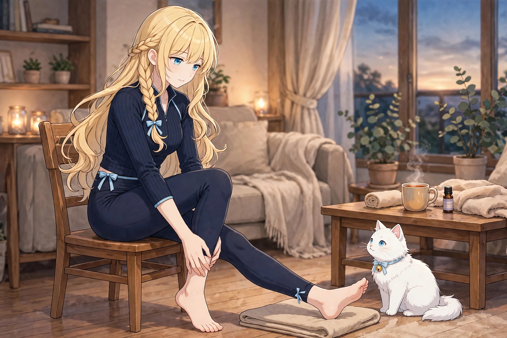
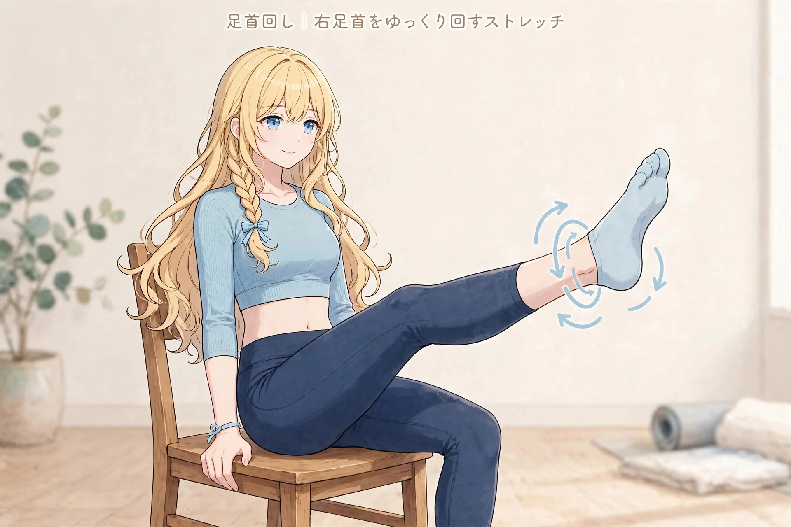
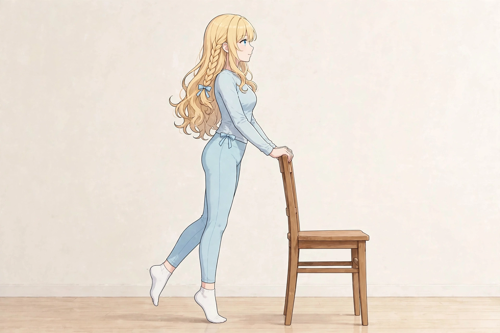

夕方の脚のむくみケア｜足首回しとふくらはぎポンプ（女性）

始める前に：痛み・しびれがある場合は行わないでください。途中で痛みが出たら中止し、気になる症状が続く場合は医療機関に相談してください。回数や秒数は目安で、無理のない範囲から始めてください。
セラフィナ：夕方になると靴がきつくなる人は、ふくらはぎを動かす習慣から始めてみてください。椅子でできる内容です。所要は約5分です。
やり方1：足首回し（左右各10回）
- 椅子に座り、片脚を少し浮かせます
- 足首をゆっくり大きく回します（図1）。速く回さないことが目安です
- 反対回しも同じ回数行い、脚を替えます

やり方2：かかとの上げ下げ（10回×2セット）
立って行うふくらはぎポンプです（図2）。椅子の背や壁に手を添えて、バランスを保ってください。

服の見え方との関係
夕方の脚の状態は、靴の履き心地とスカート姿の印象に関わります。靴側の選び方は歩きやすい靴と疲れにくいバッグの選び方、冷え対策は脚の冷え対策｜あったかレギンスの選び方にまとめています。
この記事のテーマに合う用品
PR：脚のケアに合う用品（PR）
![[Lodi fit] トレーニングチューブ](https://tshop.r10s.jp/plays23/cabinet/rakub100_0497/b0dycb5vv400.jpg?fitin=275:275)

あわせて読みたい：トレーニング用品一覧／巻き肩・猫背を整える